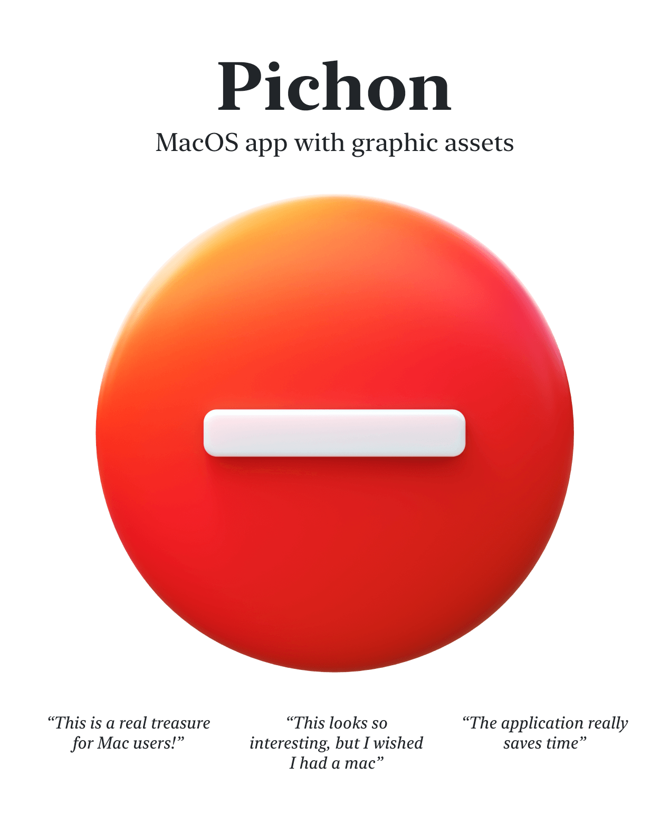
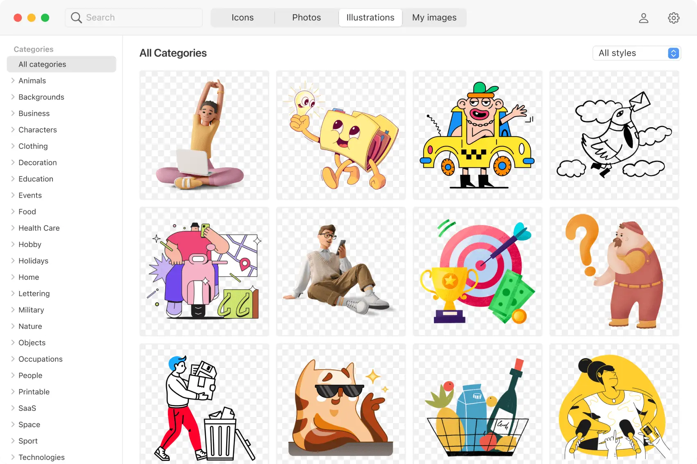
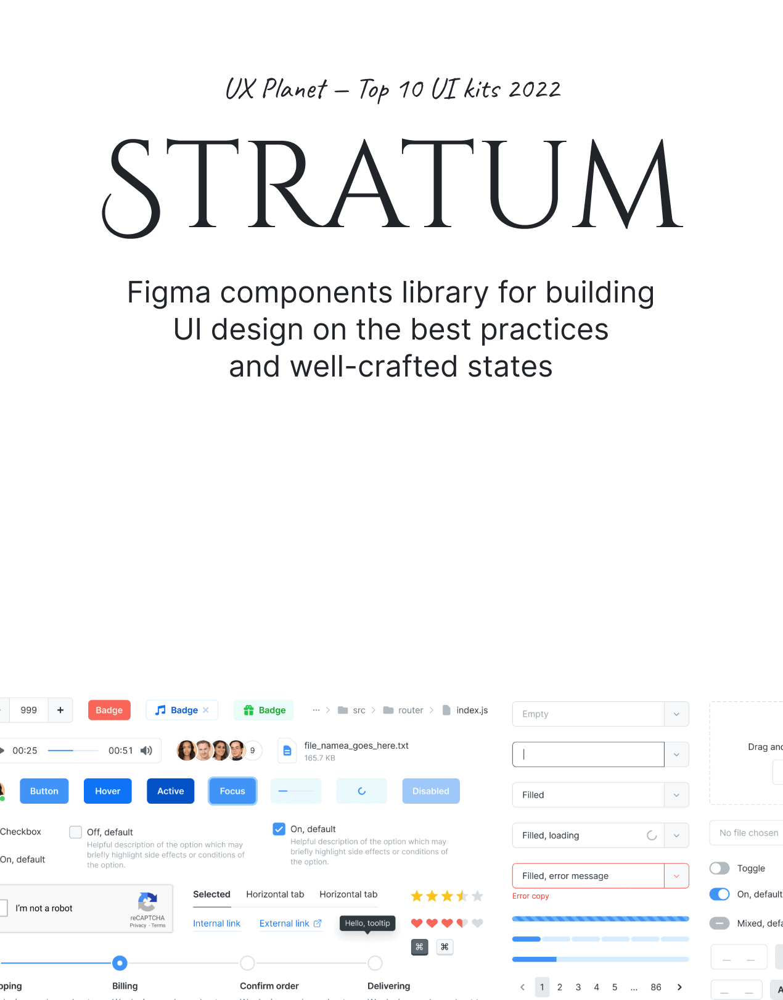
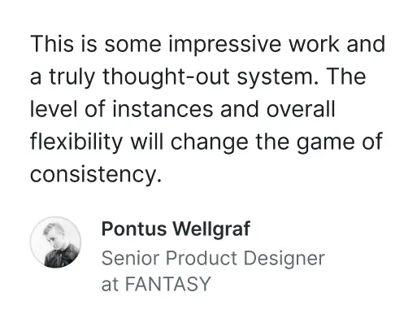
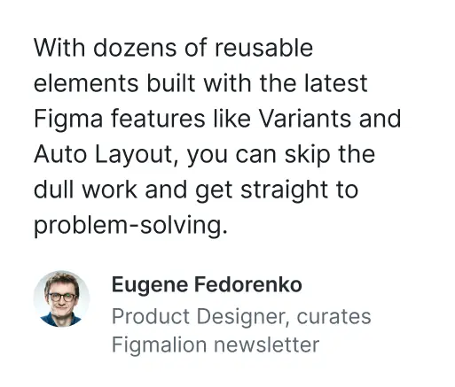
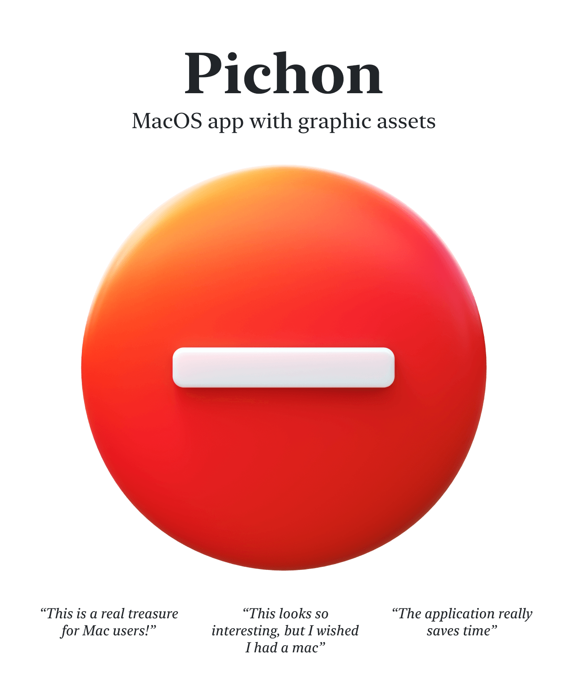
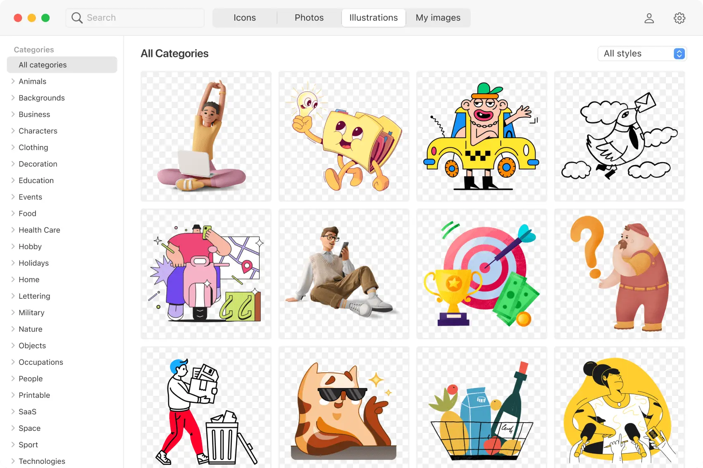
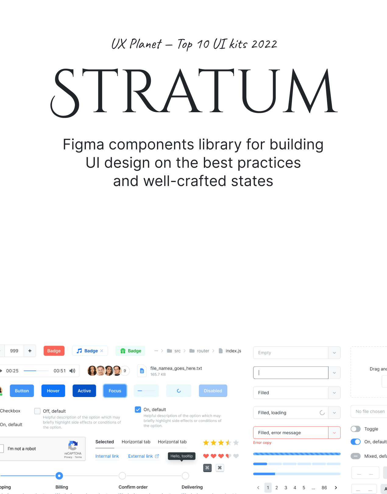
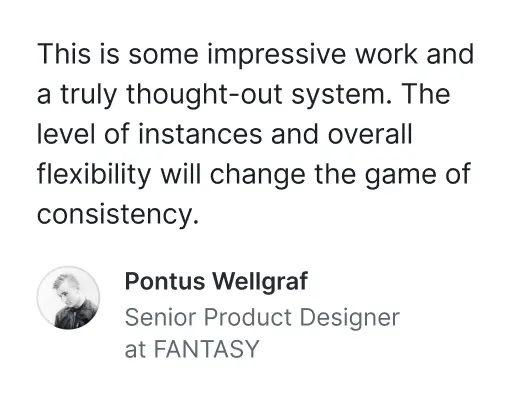
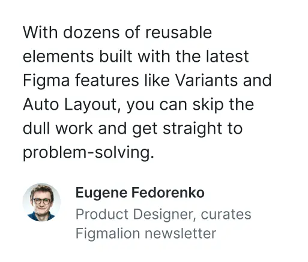
Product designer, solopreneur, and interface explorer
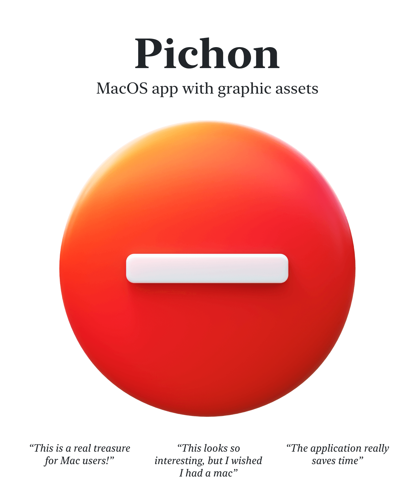
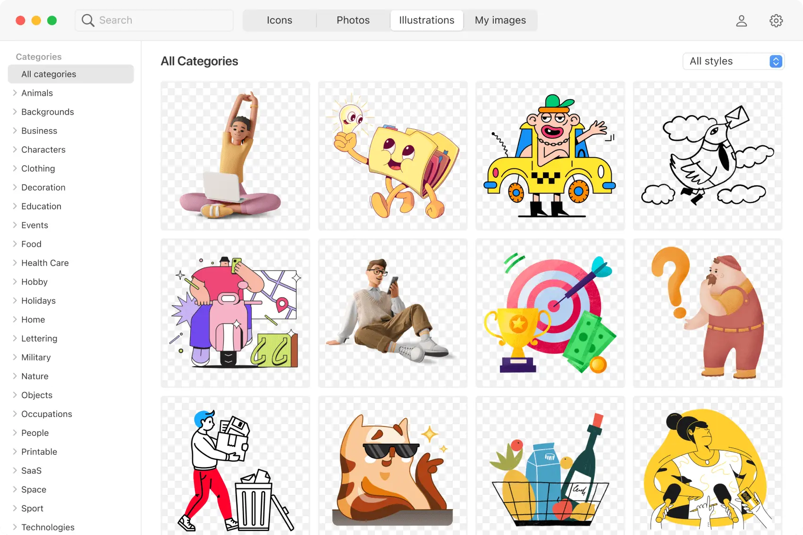
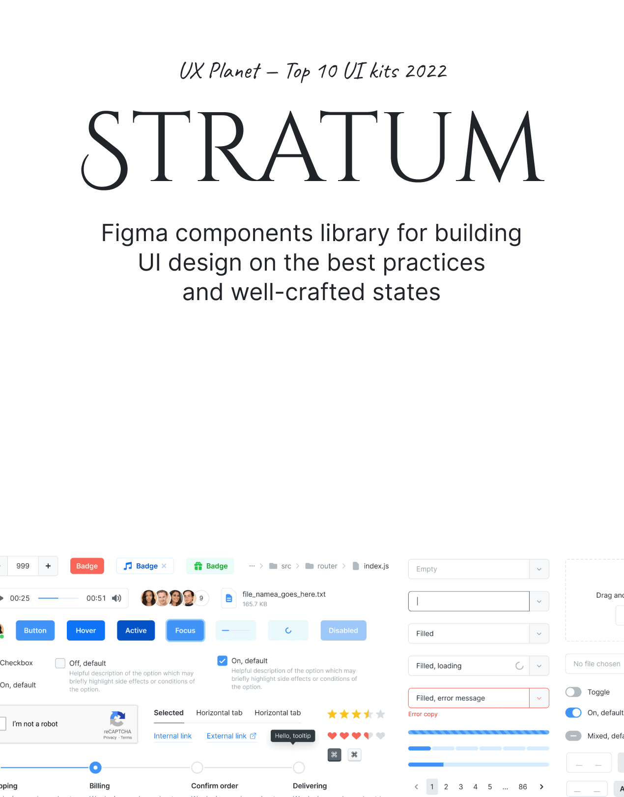
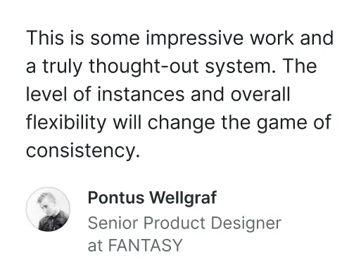
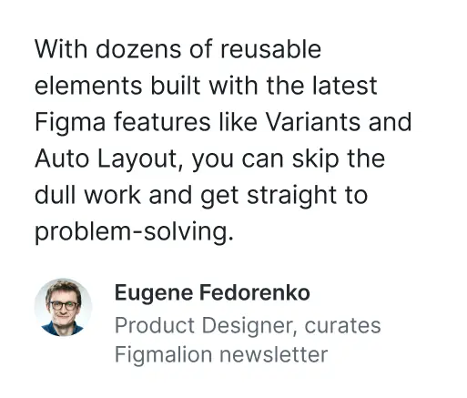
The above-listed products are where I had a key role in interface and product design or made significant contributions. Let's dive deeper in my profile.
I design products and consult. As for interfaces, I am really inspired by the interactions legends such as Douglas Engelbart, Bruce Tognazzini, Larry Tesler, among others. And the contemporary designers like Bret Victor and Rasmus Andersson, they are no exception.
I've got an entrepreneurial spirit, and passionate about marketing and start-to-finish product ownership. This vibe can make me do wild things at times. Once I created a product in a single day, launched it on Product Hunt, and collected a bounty of hot leads [sound of coins jingling]. All in the same day, gee.
Early-stage startups are my favorite to work with: initial UI design, MVP development, launch, short feedback loops, and rapid iterations. And a special shout-out to bootstrapped products — they've got a special place in my heart.
Feel free to text me. I'm always happy to chat with new people and find out what we have in common.